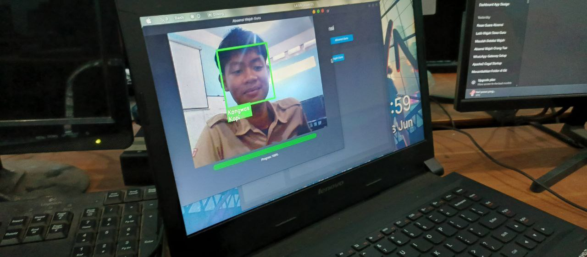

Face Attendance Scan Technology (FAST) adalah solusi manajemen kehadiran yang cerdas, cepat, dan aman menggunakan algoritma pengenalan wajah LBPH.

Demi privasi, project ini tidak menyertakan data wajah. Anda wajib melakukan perekaman dan pelatihan model pertama kali melalui menu aplikasi agar fitur absensi dapat berfungsi.
Sistem pendaftaran wajah cerdas dengan ID otomatis untuk Guru dan Siswa.
Pelatihan model LBPH langsung di perangkat Anda tanpa perlu koneksi internet atau cloud.
Notifikasi real-time via ntfy.sh setiap ada absensi yang tercatat ke database.
Orang-orang dibalik layar kesuksesan FAST Project.
Lead Developer
Web Developer
Documentation
QA Manager
Stabilitas bahasa Python dipadukan dengan keindahan UI modern CustomTkinter.
Pengenalan wajah berbasis histogram untuk hasil yang cepat dan akurat.
Database terintegrasi untuk pencatatan riwayat absensi secara lokal.
Cukup 3 langkah mudah untuk memulai aplikasi.
Unduh kode sumber project ini ke direktori lokal Anda.
Pastikan semua library terinstal dengan sempurna melalui pip.
Gunakan file entry point utama untuk meluncurkan aplikasi.